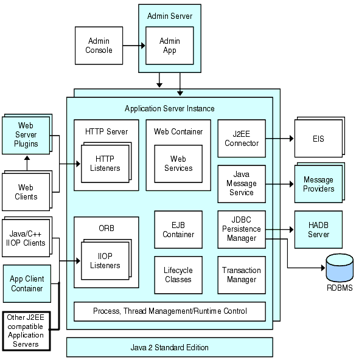

This chapter describes the Sun Java™ System Application Server system administration. Administering the Application Server includes many tasks such as creating and deploying applications, monitoring and managing performance, and diagnosing and troubleshooting problems. This chapter contains following sections:
The Sun Java System Application Server Platform Edition is a Java EE 5.0 platform compatible server for the development and deployment of Java EE applications and Java Web Services. Production use of this server is free of charge. This section contains the following topics:
The Sun Java System Application Server is a fully-featured, Java EE 5.0 platform application server providing the foundation for building reliable, scalable, and manageable applications. With its comprehensive set of features and support for component-based development, the Sun Java System Application Server provides the underlying core functionality necessary for the development and deployment of business-driven applications.
Improved Administration: Application Server provides remote secure management using a browser-based Admin Console and a scriptable command-line interface. The new Admin Console features include:
Comprehensive web services management and development support
Enhanced Monitoring, Visualization and Diagnostic tools
Enhancements to the JMX MBean API to provide for remote, secure, programmatic administration and monitoring using JMX
Improved Performance: Application deployment is faster, which makes iterative application development quicker and easier. The runtime performance of EJB components has also improved.
Expanded Platform Support: The Application Server supports additional operating systems, databases, locales, and hardware (see the Release Notes for the latest list of supported platforms).
Migration and Upgrade Tools: These tools enable you to verify Java EE applications for standards conformance and portability, help with migrations from other Java EE application servers, and aid in upgrading from previous versions of the Application Server.
Java 2 Standard Edition 5.0 Support: The Application Server supports Java 2 Standard Edition 5.0, which includes enhanced management and monitoring features and many performance and scalability improvements.
JDBC Drivers: The Application Server includes DataDirect™ JDBC™ drivers for major databases. You can use these drivers for deployment.
Web Services Security: Container message security mechanisms implement message-level authentication (for example, XML digital signature and encryption) of SOAP web services invocations using the X.509 and username/password profiles of the OASIS WS-Security standard.
WS-I Profile 1.1: As mandated by the Java EE 5.0 specification, Web Services Interoperability (WS-I) Basic Profile 1.1 enables interoperability for web services applications.
Backend Connectivity with iWay Adapters: Sun Microsystems resells and supports twenty-two iWay adapters to key backend systems to help customers leverage existing applications from the Application Server environment. These adapters support the Java EE Connector Architecture 1.5 specification and web services standards (SOAP), and include developer tools to reduce time to connect to backend applications.
Java EE Platform Support: This release implements all of the specifications covered by the Java EE 5.0 platform. For a complete list of the J2EE technologies included, see the Release Notes.
JavaServer Faces 1.2: Application Server supports JavaServer Faces 1.1, which simplifies building user interfaces for Java Server applications. Developers can quickly build web applications by assembling reusable UI components in a page, connecting the components to an application data source, and wiring client-generated events to server-side event handlers.
JavaServer Pages Standard Tag Library 1.2: The Application Server supports the JavaServer Pages Standard Tag Library (JSTL) 1.2, which encapsulates core functionality common to many JSP applications.
Administrative Tools: The Application Server includes a command-line tool and a browser-based Administration Console graphical user interface.
High Performance Message Delivery: This product supports concurrent message delivery with the Sun Java System Message Queue software.
Developer Tool Integration: The Application Server supports the NetBeans Integrated Development Environment and Sun Java Studio Creator.
This section describes Figure 1-1, which shows the high-level architecture of the Application Server.
Figure 1-1 Application Server Architecture

Containers - A container is a runtime environment that provides services such as security and transaction management to Java 2 EE components. Figure 1-1 shows the two types of Java 2 EE containers: Web and EJB. Web components, such as JSP pages and servlets, run within the Web container. Enterprise beans, the components of EJB technology, run within the EJB container.
Client Access - At runtime, browser clients access Web applications by communicating with the Web server via HTTP, the protocol used throughout the internet. The HTTPS protocol is for applications that require secure communication. Enterprise bean clients communicate with the Object Request Broker (ORB) through the IIOP or IIOP/SSL (secure) protocols. The Application Server has separate listeners for the HTTP, HTTPS, IIOP, and IIOP/SSL protocols. Each listener has exclusive use of a specific port number.
Web Services - On the Java 2 EE platform, it is possible to deploy a Web application that provides a Web service implemented by Java API for XML-Based RPC (JAX-RPC). A J2EE application or component can also be a client to other Web services. Applications access XML registries through the Java API for XML Registries (JAXR).
Services for Applications - The Java 2 EE platform was designed so that the containers provide services for applications. Figure 1-1 shows the following services:
Naming - A naming and directory service binds objects to names. A J2EE application locates an object by looking up its JNDI name. JNDI stands for the Java Naming and Directory Interface API.
Security - The Java Authorization Contract for Containers (JACC) is a set of security contracts defined for the J2EE containers. Based on the client's identity, the containers restrict access to the container's resources and services.
Transaction management - A transaction is an indivisible unit of work. For example, transferring funds between bank accounts is a transaction. A transaction management service ensures that a transaction either completes fully or is rolled back.
The Java 2 EE platform enables applications to access systems that are outside of the application server. Applications connect to these systems through objects called resources. One of the responsibilities of an administrator is resource configuration. The Java 2 EE platform enables access to external systems through the following APIs and components:
JDBC - A database management system (DBMS) provides facilities for storing, organizing, and retrieving data. Most business applications store data in relational databases, which applications access via the JDBC API. The information in databases is often described as persistent because it is saved on disk and exists after the application ends. The Application Server bundle includes the PointBase DBMS.
Messaging - Messaging is a method of communication between software components or applications. A messaging client sends messages to, and receives messages from, any other client. Applications access the messaging provider through the Java Messaging Service (JMS) API. The Application Server includes a JMS provider.
Connector - The J2EE Connector architecture enables integration between J2EE applications and existing Enterprise Information Systems (EIS). An application accesses an EIS through a portable J2EE component called a connector or resource adapter.
JavaMail - Through the JavaMail API, applications connect to an SMTP server in order to send and receive email.
Server Administration -The lower right-hand corner of Figure 1-1 shows some of the tasks performed by the administrator of the Application Server. For example, an administrator deploys (installs) applications and monitors the server's performance. These tasks are performed with the administration tools provided by the Application Server.
The Application Server includes three administrative tools:
The Admin Console is a browser-based tool that features an easy-to-navigate interface and online help. The administration server must be running to use the Admin Console.
When the Application Server was installed, you chose a port number for the server, or used the default port of 4848. You also specified a user name and master password.
To start the Admin Console, in a web browser type:
http://hostname:port |
For example:
http://kindness.sun.com:4848 |
If the Admin Console is running on the machine on which the Application Server was installed, specify localhost for the host name.
On Windows, start the Application Server Admin Console from the Start menu.
The installation program creates the default administrative domain (named domain1) with the default port number 4848, as well as an instance separate from the domain administration server (DAS). After installation, additional administration domains can be created. Each domain has its own domain administration server, which has a unique port number. When specifying the URL for the Admin Console, be sure to use the port number for the domain to be administered.
The asadmin utility is a command-line tool. Use the asadmin utility and the commands associated with it to perform the same set of tasks that can be performed in the Admin Console. For example, start and stop domains, configure the server, and deploy applications.
Use these commands either from a command prompt in the shell, or call them from other scripts and programs. Use these commands to automate repetitive administration tasks.
To start the asadmin utility:
$ asadmin |
To list the commands available within asadmin:
asadmin> help |
It is also possible to issue an asadmin command at the shell's command prompt:
$ asadmin help |
To view a command's syntax and examples, type help followed by the command name. For example:
asadmin> help create-jdbc-resource |
The asadmin help information for a given command displays the UNIX man page of the command. These man pages are also available in HTML format.
The Application Server Management eXtension is an API that exposes all of the Application Server configuration and monitoring JMX managed beans as easy-to-use client-side dynamic proxies implementing the AMX interfaces.
For more information on using the Application Server Management Extension, see the JMX chapter in the Application Server Developer's Guide.
The Application Server Admin Console is a Web browser-based, graphical user interface that you use to manage the application server domain. An Application Server domain is a logically related group of Application Server resources that you manage as a unit. A domain includes one or more Application Servers. You deploy and manage your applications as part of a domain.
One instance of the Application Server in the domain is configured as a Domain Administration Server (DAS). The Domain Administration Server provides a central point for managing an Application Server domain. In a domain with only a single Application Server instance, that server functions both a Domain Administration Server and the management server. The Domain Administration Server hosts the Administration Console, which is a Web application accessible from any supported Web browser with network access to the Administration Server.
Use the Administration Console to:
Configure, start, and stop Application Server instances
Configure Application Server services, such as database connectivity (JDBC) and messaging (JMS)
Configure security parameters, including managing users, groups, and roles
Configure and deploy your applications
Monitor server and application performance
View server and domain log files
The Admin Console's online help is context-sensitive: When clicking the Help link in the upper right corner, the help browser window displays a topic related to the current Admin Console page.
The online help includes conceptual topics that are not context-sensitive. To view one of these topics, select it from the table of contents in the help browser window.
Application Server domains are logical or physical units created to help the administrator manage a system configuration. A domain is broken down into smaller units including instances. A server instance is a single Java Virtual Machine (JVM) that runs the Application Server on a single physical machine. Each domain has one or more instance.
Domains are created using the create-domain command. The following example command creates a domain named mydomain. The administration server listens on port 1234 and the administrative user name is admin. The command prompts for the administrative and master passwords.
$ asadmin create-domain --adminport 80 --adminuser admin mydomain |
To start the Admin Console for mydomain domain, in a browser, enter the following URL:
http://hostname:80 |
For the preceding create-domain example, the domain's log files, configuration files, and deployed applications now reside in the following directory:
domain-root-dir/mydomain
To create the domain's directory in another location, specify the --domaindir option. For the full syntax of the command, type asadmin help create-domain.
Domains are deleted using the asadmin delete-domain command. Only the operating system user (or root) who can administer the domain can execute this command successfully. To delete a domain named mydomain, for example, type the following command:
$ asadmin delete-domain mydomain |
The domains created on a machine can be found using the asadmin list-domains command. To list the domains in the default domain-root-dir directory, type this command:
$ asadmin list-domains |
To list domains that were created in other directories, specify the --domaindir option.
When starting a domain, the administration server and application server instance are started. Once the application server instance is started it runs constantly, listening for and accepting requests.
To start a domain, type the asadmin start-domain command and specify the domain name. For example, to start the default domain (domain1), type the following:
$ asadmin start-domain --user admin domain1 |
For the full command syntax, type asadmin help start-domain. If the password data is omitted, you are prompted to supply it.
From the Windows Start Menu, select Programs -> Sun Microsystems -> Application Server -> Start Admin Server.
Stopping a domain shuts down its administration server and application server instance. When stopping a domain, the server instance stops accepting new connections and then waits for all outstanding connections to complete. This process takes a few seconds because the server instance must complete its shutdown process. While the domain is stopped, the Admin Console or most asadmin commands cannot be used.
To stop a domain, type the asadmin stop-domain command and specify the domain name. For example, to stop the default domain (domain1), type the following:
$ asadmin stop-domain domain1 |
If there is only one domain, then the domain name is optional. For the full syntax, type asadmin help stop-domain.
From the Start menu select Programs -> Sun Microsystems -> Application Server-> Stop Admin Server.
The Application Server creates one application server instance, called server at the time of installation. You can delete the server instance and create a new instance with a different name if you prefer.
Each Application Server instance has its own Java 2 EE configuration, Java 2 EE resources, application deployment areas, and server configuration settings. Changes to one application server instance have no effect on other application server instances. You can have many application server instances within one administrative domain.
For many users, one application server instance meets their needs. However, depending upon your environment, you might want to create one or more additional application server instances. For example, in a development environment you can use different application server instances to test different Application Server configurations, or to compare and test different application deployments. Because you can easily add or delete an application server instance, you can use them to create temporary "sandbox" areas to experiment with while developing.
In addition, for each application server instance you can also create virtual servers. Within a single installed application server instance you can offer companies or individuals domain names, IP Addresses, and some administration capabilities. For the users, it is almost as if they have their own web server, without the hardware and basic server maintenance. These virtual servers do not span application server instances. For more information about virtual servers, see the Java Virtual Machine chapter of the Administration Guide.
In operational deployments, for many purposes you can use virtual servers instead of multiple application server instances. However, if virtual servers do not meet your needs, you can also use multiple application server instances.
An Application Server instance is not started automatically. Once you start an instance, the instance runs until you stop it. When you stop an application server instance, it stops accepting new connections, then waits for all outstanding connections to complete. If your machine crashes or is taken offline, the server quits and any requests it was servicing may be lost.
Application server instances form the basis of an application deployment. Each instance belongs to a single domain and has its own directory structure, configuration, and deployed applications. Each server instance also includes the J2EE platform web and EJB containers. Every new server instance must contain a reference to a node agent name defining the machine on which the instance will reside.
There are two types of server instances that can be created. Each server instance can only be of one type:
In the stand-alone server instance the configuration is not shared by any other server instance.
In the shared server instance the configuration is shared with other instances.
Figure 1-2 shows an application server instance in detail. The application server instance is a building block in the clustering, load balancing, and session persistence features of the Application Server Enterprise Edition.
Figure 1-2 Application Server Instance
Transactions might be incomplete either because the server crashed or a resource manager crashed. It is essential to complete these stranded transactions and recover from the failures. Application Server is designed to recover from these failures and complete the transactions upon server startup.
If the selected server is running, then recovery will be done by the same server. If the selected server is not running, then the selected Destination Server will do the recovery.
When making any of these configuration changes, restart the server for the changes to take effect:
Changing JVM options
Changing port numbers
Managing HTTP, IIOP, and JMS services
Managing thread pools
With dynamic configuration, most changes take effect while the server is running. To make the following configuration changes, do NOT restart the server:
Deploying and undeploying applications
Adding or removing JDBC, JMS, and Connector resources and pools
Changing logging levels
Adding file realm users
Changing monitoring levels
Enabling and disabling resources and applications
The following table describes the port listeners of the Application Server.
Table 1-1 Application Server Listeners that Use Ports
Listener | Default Port Number | Description |
|---|---|---|
Administrative server | 4848 | A domain's administrative server is accessed by the Admin Console and the asadmin utility. For the Admin Console, specify the port number in the URL of the browser. When executing an asadmin command remotely, specify the port number with the --port option. |
HTTP | 8080 | The Web server listens for HTTP requests on a port. To access deployed Web applications and services, clients connect to this port. |
HTTPS | 8181 | Web applications configured for secure communications listen on a separate port. |
IIOP | Remote clients of enterprise beans (EJB components) access the beans through the IIOP listener. | |
IIOP, SSL | Another port is used by the IIOP listener configured for secure communications. | |
IIOP, SSL and mutual authentication | Another port is used by the IIOP listener configured for mutual (client and server) authentication. |
Sun Microsystems Worldwide Training - Over 250,000 students each year are trained by Sun and its authorized centers through Web-based courses and at over 250 training sites located in more than 60 countries. For more information, see: http://training.sun.com/.
The Java 2 EE 5.0 Tutorial - Written for developers, the tutorial has administrative instructions for configuring JMS, setting up JavaMail resources, and managing security. To access the tutorial, go to: http://java.sun.com/j2ee/1.4/docs/tutorial/doc/index.html.
Application Server Developer's Guide - This guide contains development information that is specific to the Application Server.
The asadmin man pages - Available in HTML format, these pages include syntax and examples for all the application server utilities including the asadmin utility commands.
Application Server Release Notes
docs.sun.com: Sun Product Documentation - From this site you can search for and access all of our product documentation: http://docs.sun.com/.
Java 2 EE 5.0 Documentation page - Located on our public Web site, this page has links to the technical documentation for the J2EE 1.4 platform: http://java.sun.com/j2ee/1.4/docs/.
The Quick Start Guide - This document shows you how to deploy and run a simple Web application. The guide is in the install-dir/docs/QuickStart.html file.